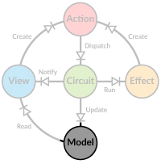
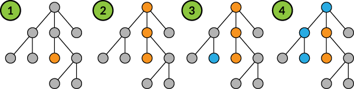

Application Model
 Having all your application state in a single model may seem like a daunting design task, but it's not really that different from designing a hierarchical UI layout. If you are used to having a distributed state between different stores and components, take some time to sit down and redesign the model as a single hierarchy.
As the model has to be immutable, it makes sense to build it out of case classes. This provides us with many benefits down the line, such as pattern matching
and use of the copy method. For illustration purposes we'll define a simple case class hierarchy to represent the application model.
case class Root(a: A, b: B, c: String)
case class A(d: Int, e: String)
case class B(f: Boolean, g: Option[D])
case class D(h: Seq[Int], i: Int)
object AppCircuit extends Circuit[Root] { ... }
Making modifications to an immutable model means making a copy of the model every time something changes. Naturally we'll want to modify only those parts of the hierarchy that we absolutely need to, leaving the rest as it is. These changes can be visualized as below: 
- We want to change
B.ftofalse - To implement the change, we must also change
bandrootobjects withroot = root.copy(b = root.b.copy(f = false)) - Next we want to change
A.eto"normal" - To implement this change, we must also change
aandrootwithroot = root.copy(a = root.a.copy(e = "normal"))
All the other parts of the model hierarchy stay the same throughout these changes, so your render code can skip re-rendering root.b.g for example.
Accessing the Model
In Diode your application model is safely tucked inside the Circuit class, without any direct access. Instead you will get indirect access via readers and
writers. These are defined as ModelR and ModelRW traits.
For example if your view needs to render the sequence of Ints in D, it doesn't care where that data comes from as long as it has access to it. Furthermore,
since the state changes always create a new root model, we cannot simply give the current value and expect that to work in the future. What we need is a chain
of functions going from root all the way to the piece of data we are interested in. The classes implementing ModelR and ModelRW provide this. To build a
reader to root.b.g.h we would write:
val reader: ModelR[Option[Seq[Int]]] = new RootModelR(root).zoom(_.g.map(_.h))
Because we have an Option[D] on the path, we need to use map to access the contents of D, thus leaving us with an Option[Seq[Int]] reader. To get the
current value from the reader we simply call reader.value.
The Circuit provides zoom and zoomRW functions to zoom into the application model, so we can rewrite the previous example as:
val reader: ModelR[Option[Seq[Int]]] = AppCircuit.zoom(_.g.map(_.h))
Note that you don't need to specify the types for the readers, they are automatically inferred. They are displayed here for clarity.
Complex Access Patterns
We are not limited to traversing the hierarchy to get a reader for just a single value. Since we get to define the access function ourselves, we can freely access anything in the model and return a composite.
val complexReader: ModelR[(String, Boolean, Option[Int])] =
AppCircuit.zoom(r => (r.a.e, r.b.f, r.g.map(_.i)))
This helps detaching the application model from the UI hierarchy, as you can keep your data in a sensible structure while allowing your UI components to access it in a natural way.
Modifications through Writers
The ModelRW trait adds functionality to update the model. In addition to providing a function for reading a value, it requires a second function
for updating.
val rwForA: ModelRW[Root, A] = AppCircuit.zoomRW(_.a)((m, v) => m.copy(a = v))
val rwForA_e: ModelRW[Root, String] = rwForA.zoomRW(_.e)((m, v) => m.copy(e = v))
This time we are defining the writer in two steps to take advantage of the provided function composition. To make the update, just call updated.
val newRoot: Root = rwForA_e.updated("New value!")
Since Circuit doesn't allow us to change the internal model directly, we are just storing a copy for demonstration purposes. Only way to make actual changes
to the model is to dispatch and handle actions.